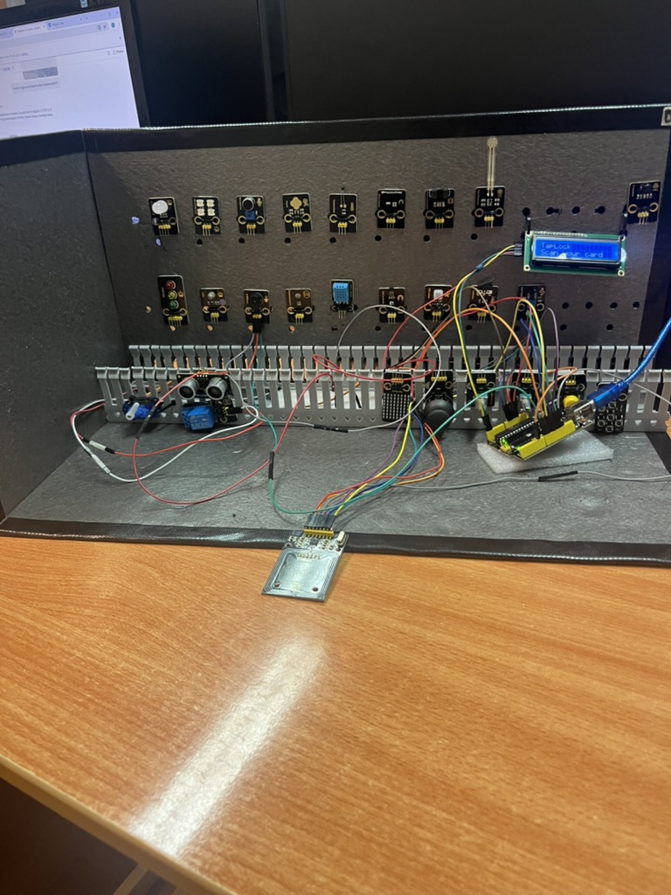
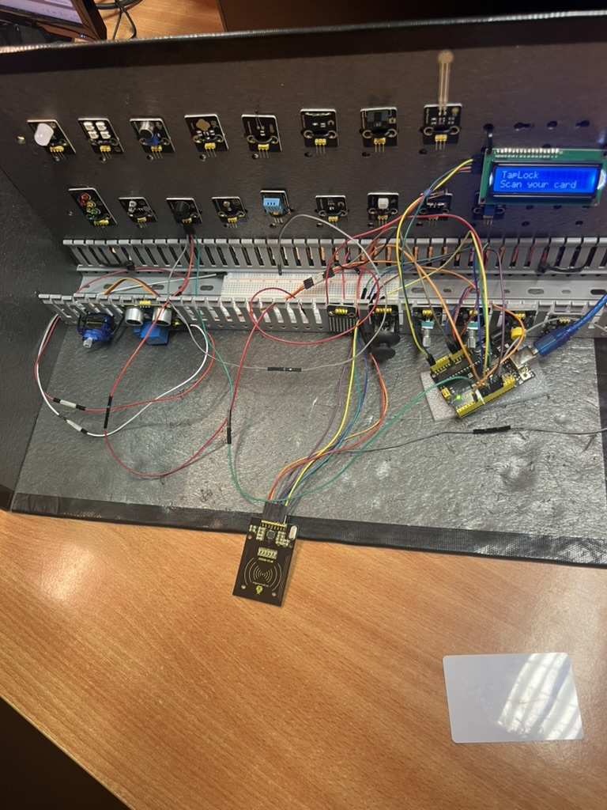
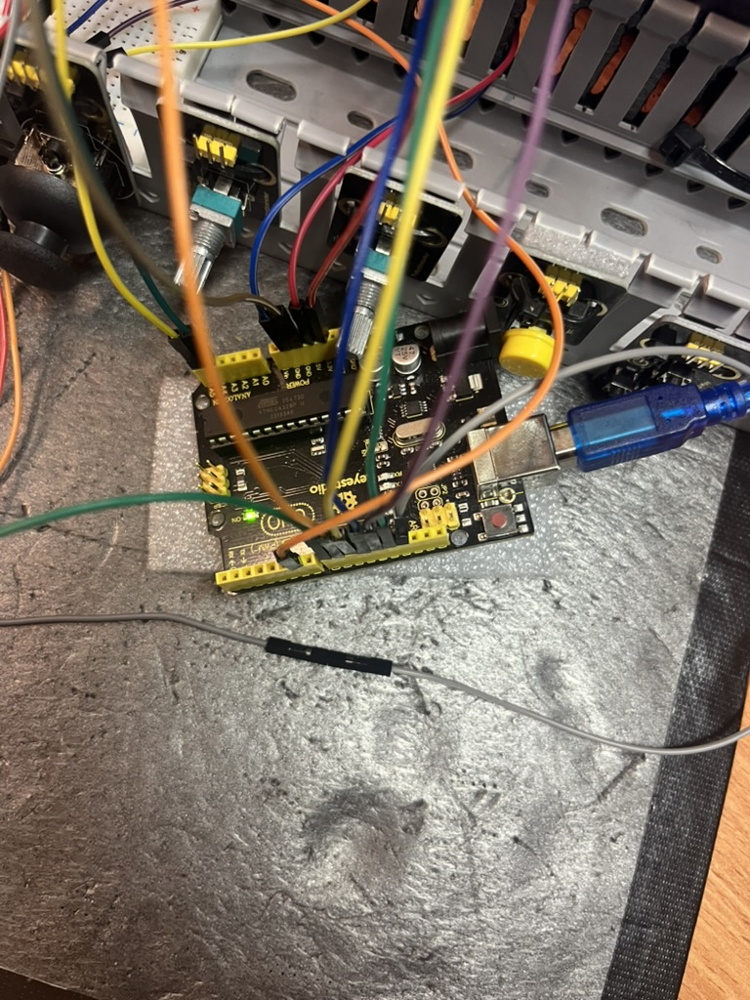
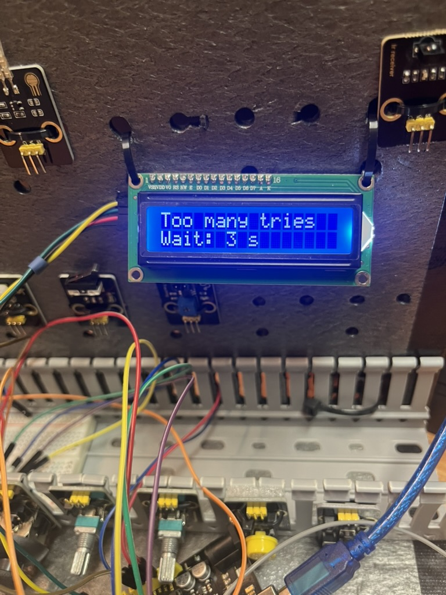

Course project
TapLock
An RFID lock built with an Arduino UNO. A registered card or key fob turns a servo open for five seconds, an unknown card gets a low beep, and three wrong cards in a row block the reader for 30 seconds. Every attempt is saved to a CSV file.
Overview
The RC522 reader reads the UID of a contactless card. The Arduino looks that UID up in a short list of authorised cards. If it is there, the servo turns to the open position and the buzzer gives a short high beep; after five seconds the servo turns back. If it is not, the buzzer gives a long low beep and nothing moves. After three wrong cards in a row the reader ignores every card for 30 seconds, so trying cards one after another gets slow very quickly.
How the card is read
The card has no battery. The reader produces a 13.56 MHz field, the field induces a current in the coil inside the card, and that is enough for the card's chip to answer with its UID, a number written at the factory. A 4-byte UID is not guaranteed to be unique, and cards with a writable UID are easy to buy. The security part of the experiments comes back to this.
Photos








Hardware
| Part | Model | Job |
|---|---|---|
| Board | KS0001 UNO R3 | Reads the card, decides, drives the lock |
| RFID reader | KS0067 RC522 RFID Module | Reads the UID over SPI; comes with cards and key fobs |
| Lock | KS0209 Micro Servo 9G | Turns the bolt |
| Buzzer | KS0019 Passive Buzzer Alarm Module | Accept and deny sounds |
| LCD | LCM 1602 + I²C (16×2) | Shows the scan prompt and lockout countdown on the physical build |
| Wiring | Breadboard, jumper wires, USB cable | Connections and power |
Prototype connections
| Module pin | UNO pin | Note |
|---|---|---|
| RC522 VCC | 3.3V | never 5V |
| RC522 GND | GND | |
| RC522 RST | D9 | reset |
| RC522 SDA | D10 | SPI chip select |
| RC522 MOSI | D11 | hardware SPI |
| RC522 MISO | D12 | hardware SPI |
| RC522 SCK | D13 | hardware SPI |
| RC522 IRQ | not connected | |
| Servo signal | D6 | servo + to 5V, servo - to GND |
| Buzzer S | D8 | buzzer + to 5V, buzzer - to GND |
Design decisions
D11, D12 and D13 are the hardware SPI pins of the UNO, so only SDA and RST could be chosen; the buzzer went to
D8 because D9 is the reader's reset. The servo uses Timer1 and tone() uses Timer2, so they never
compete for a timer.
Software
The sketch is a state machine with three states: LOCKED, UNLOCKED and
LOCKOUT. It never calls delay(). It stores the time a state started and compares it
with millis() on every pass of loop(), so the reader keeps working while the lock is open.
Every state change goes through one function, setState(), and that function also moves the servo.
Only UNLOCKED opens it, so the servo cannot stay open while the program thinks the door is locked.
Settings in the code
const int ANGLE_LOCKED = 0; // servo angle when locked
const int ANGLE_OPEN = 90; // servo angle when open
const uint32_t UNLOCK_TIME_MS = 5000; // how long the lock stays open
const uint8_t MAX_TRIES = 3; // wrong cards in a row before lockout
const uint32_t LOCKOUT_MS = 30000; // how long cards are ignored after that
const uint8_t AUTHORISED[][UID_SIZE] = {
{ 0x11, 0x22, 0x33, 0x44 }, // Wokwi green card
{ 0xC0, 0xFF, 0xEE, 0x99 } // Wokwi key fob
};Adding an authorised card
- Upload
read_uid.inofrom the Arduino IDE, then open Serial Monitor at 9600 baud. - Tap the card on the RC522. For a 4-byte UID, copy the values in braces and the trailing comma,
for example
{ 0x11, 0x22, 0x33, 0x44 },. - Add the entry to the authorised-card list in the sketch you use for your build. In the repository's
taplock.ino, paste it on its own line just after the opening brace ofAUTHORISED. - Upload the edited sketch and tap the card again to confirm access. For the LCD build, use your LCD-enabled sketch for this step.
The repository sketch accepts only 4-byte UIDs and prints GRANTED when it accepts a card.
Logging
For every attempt the Arduino prints one line, millis,uid,result, where the result is
GRANTED, DENIED or LOCKOUT. The Arduino has no clock, so a Python script on
the computer adds the date and time and appends the line to data/attempts.csv in this repository.
python3 tools/logger.py # lists the serial ports
python3 tools/logger.py /dev/cu.usbmodem14101 # macOS
python3 tools/logger.py COM3 # WindowsLog viewer
The attempts saved in data/attempts.csv. Another file from the logger can be opened here too;
it is read in the browser and not uploaded anywhere.
No attempts recorded yet.
| Date and time | UID | Result |
|---|
Libraries and tools
Experiments
Simulated results. A Python model ran ten virtual trials per condition for reader range, card angle and materials between the card and the reader. These estimates are unverified on the physical TapLock.
NXP lists a typical reach of up to 50 mm depending on antenna size and tuning. NXP MFRC522 datasheet · Simulated trials (CSV)
Model assumptions
The model approximates the reader as a circular coil with a 20 mm effective radius. Signal falls with distance
according to F(d) = (1 + (d / 20)²)⁻³ᐟ² and scales with the cosine of the card's tilt. The flat,
unobstructed reference ranges are set to 38 mm for the card and 24 mm for the key fob. Ten paired trials use
a uniformly distributed signal variation of ±20% with random seed 522.
The assumed signal multipliers are 1.00 with no barrier, 0.06 for the metal holder, 0.44 for the phone, 0.91 for the paper notebook and 0.56 for the second card. Distance sweeps stop at assumed thicknesses of 0, 3, 8, 8 and 1 mm respectively. Metal near the antenna can reduce the field and change its tuning. NXP antenna design guide
Reading range
The model brings each flat target toward the reader in 1 mm steps from 50 mm and records its first successful read.
| Target | Average (mm) | Min (mm) | Max (mm) |
|---|---|---|---|
| Card | 37.5 | 34 | 40 |
| Key fob | 23.5 | 21 | 25 |
Angle of the card
The centre of the card stays 27 mm from the reader. A tilt of 0° means the two surfaces are parallel.
| Angle | Read in 10 tries | Comment |
|---|---|---|
| 0°, flat | 10/10 | Strongest coupling |
| 30° | 10/10 | Above the read threshold in every trial |
| 60° | 6/10 | Close to the read threshold |
| 90°, edge on | 0/10 | No read in the model |
Materials in between
The card stays flat at 27 mm for the read counts. The range column averages ten distance sweeps for each material. A condition with no successful sweeps is marked “No read”.
| Material | Read in 10 tries | Average range (mm) |
|---|---|---|
| Nothing | 10/10 | 37.5 |
| Metal card holder | 0/10 | No read |
| Mobile phone | 4/10 | 25.2 |
| Paper notebook | 10/10 | 35.9 |
| A second RFID card | 8/10 | 28.7 |
Conclusions
In the model, the flat card reads 14 mm farther on average than the key fob. That difference follows from the assumed antenna coupling. At 27 mm, the notebook produces the same read count as the unobstructed card, while the phone cuts it to 4/10 and the metal holder to 0/10. The stacked-card test models weaker coupling to the target card. Finding which UID the reader returns requires a separate hardware test.
Security
Checking only the UID is weak. A card with a writable UID costs very little, and a copied UID opens this lock just like the original. MIFARE Classic cards also have memory sectors protected by a key, and the MFRC522 library can authenticate to them, so reading a secret from a sector would be a stronger check than the UID alone.
Timeline
Newest first.
-
Wokwi simulation
Read a UID in the simulator, then test grant, deny and lockout.
-
Repository and report page
Repository published, GitHub Pages turned on.
-
Idea and parts
Chose RFID access control and checked every part against the laboratory inventory.